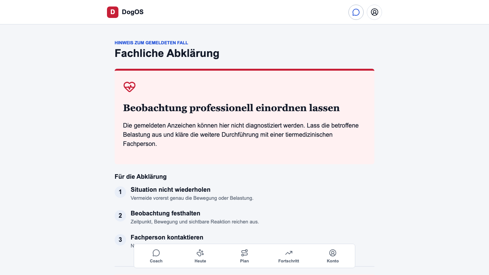

Safety escalation
PASS · An acute report holds the affected exercise and offers review without diagnosis or a terminal conversation.

Development-only protocol. No diagnosis, emergency service, production provider release, or professional approval is claimed.